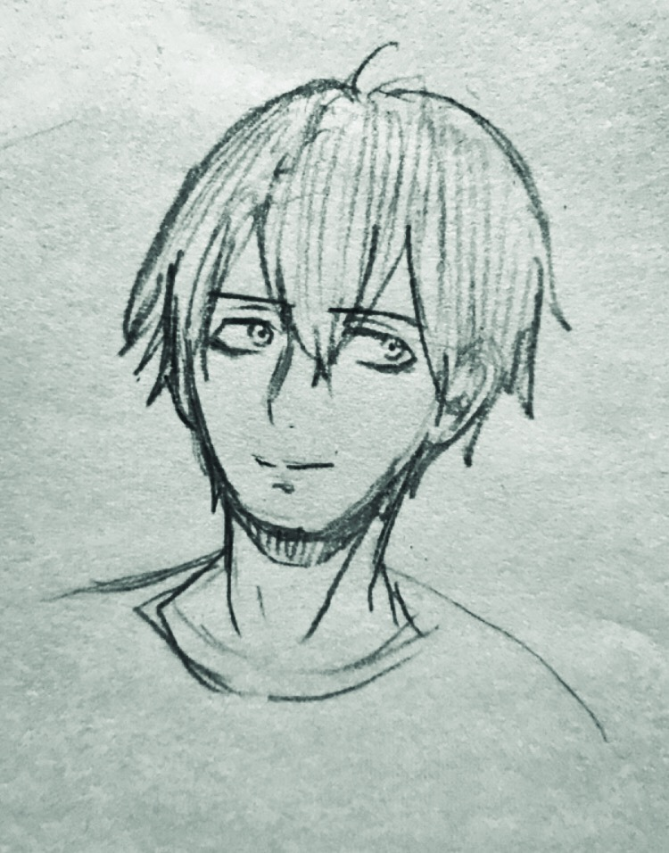

| つゆだく | |
|---|---|
|  | |
| 年齢 | 28 |
| 性別 | 男 |
| 身長 | 175cm |
| 髪型 | 黒髪 |
| 目 | 死んでいる |
| 一人称 | 俺 |
| 二人称 | お前、あなた |
| 出典 | しがない世界で牛丼屋 |
つゆだくは、「しがない世界で牛丼屋」主人公である。
料理人になる夢を持つ心優しき青年。
この世界に来てからは銀丞約望とステラの3人で暮らしている。
塩野玄蔵に憧れて料理人になること決意したが、両親の反対により調理学校に通うことはなかった。
それでも夢をあきらめられなかったつゆだくは、親と勘当し自分でお金を貯めて料理人になることを決意する。
しかしお金を貯めるために入った会社で働くこと6年、いつの間にか自分のしたいことを置き去りに日々をただ過ごしていた。
そんなある日、いつものようにお気に入りの牛丼屋を出た瞬間、突然意識を失ってしまう。
そして目を覚ました時、そこには目を疑いたくなるような異世界が広がっていた。
迷い込んだ異世界は現代よりさらに自分の夢から遠いものであった。
何もできない自分に対して。そんな時声がした。